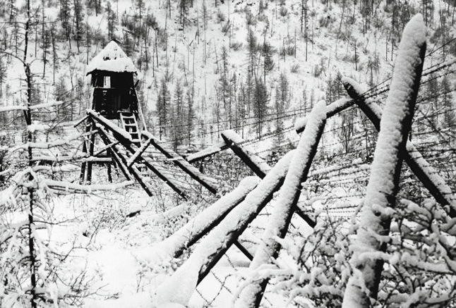

I PRIMI GULAG
|
Fin dal XVI secolo finirono in Siberia delinquenti comuni, nemici politici, prigionieri di guerra: il governo si liberava così degli indesiderati, sfruttandoli per colonizzare quei posti lontani (da cui fuggire significava affrontare mortali lande inospitali) e per lavorare in miniere e fabbriche. |
 |
LE ORIGINI
|
Il sistema dei gulag nacque all'inizio degli anni Trenta del Novecento, quando acquisirono una funzione economica fondamentale perché gli internati coltivavano forzatamente terre vergini tra la Siberia e il Kazakistan.Un sistema di campi di lavoro esisteva in Russia già dal '600, col nome di Katorga, dove si recludevano criminali comuni e oppositori politici anti-zaristi (lo stesso Stalin fu internato in un Katorga tra il 1913-1917[10]). Durante la rivoluzione bolscevica Lenin ordinò la liberazione dai Katorga dei prigionieri anti-zaristi. I bolscevichi, nei primi anni '20, durante la guerra civile russa, aprirono il Lager Soloveckij, dove detenevano i prigionieri. | |
I CAMPI
| Durante il conflitto migliaia di polacchi e abitanti di altre terre invase ed annesse all'unione sovietica vennero arrestati e inviati nei gulag (circa 2,5 milioni, che in confronto al numero totale dei detenuti è solo una piccola percentuale). Sopravvissero pochi uomini, circa il 10%. Nel dopoguerra si contavano nei Gulag disertori, criminali, prigionieri di guerra, traditori accusati, a torto o a ragione, di "cooperazione col nemico". |
<LA FINE DEI GULAG
| Ufficialmente il sistema Gulag fu soppresso dall'ordinanza numero 20 del 25 gennaio 1960 del Ministero degli affari interni sovietico, ma continuarono ad esistere colonie di lavoro forzato per prigionieri politici e criminali. I "politici" continuarono a essere tenuti in uno dei campi più famosi, "Perm-36", fino al 1987, quando fu chiuso. |